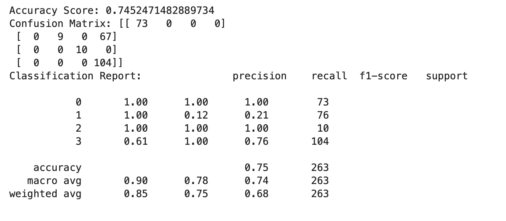
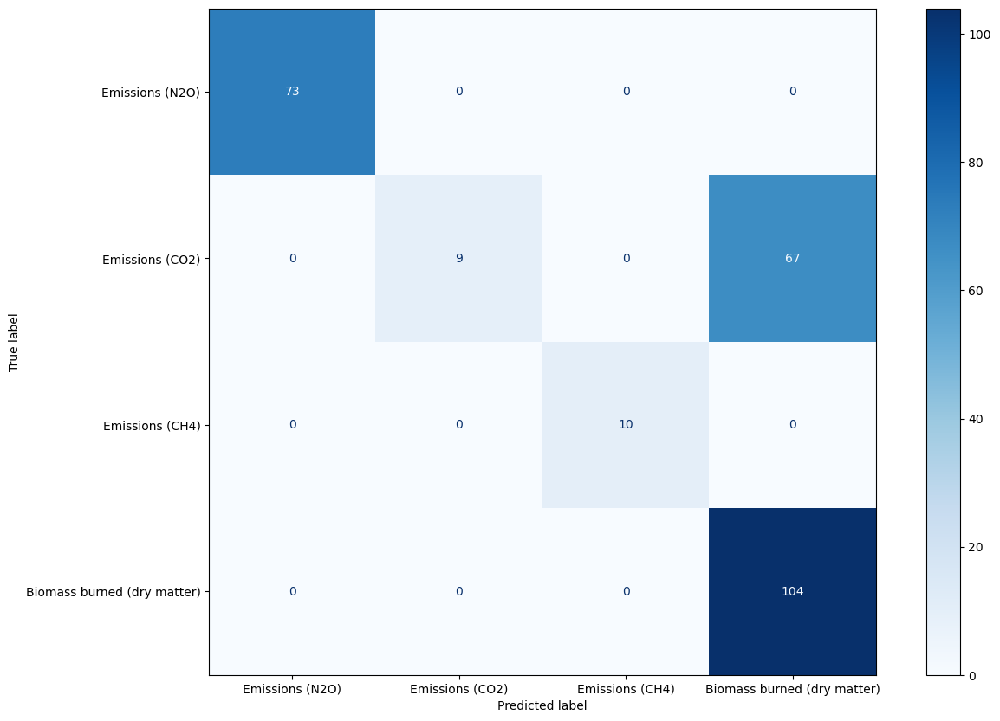

Naive BAyes is computed on Text and Record data using python. The text data is collected fron twitter on the hashtags "climatechange" and "savetheplanet." The goal of collecting this text data was to learn about people's perspectives on how important climate change is in today's world. To get a quick overview of the data, a wordcloud of both the hashtags has been made. Naive Bayes is is used to tarin the model to classify the tweets between these two hashtags.
For record data, the data is collected to see the elements emitted into the environment from croop residue and waste food disposal. The model is trained to predict various emission to the environment from crop residue and food disposal.
The dataset is divided into training and testing sets before the model is built. The split ratio in the training set is 0.75 and in the testing set it is 0.25. Three distinct naive bayes models are developed. The hypertuning of various parameters distinguishes the Naive Bayes models. Specifically, the alpha values.
The first naive bayes model was developed. The hyper parameter in this model s alpha = 1. The accuracy of this model is 89%.
The snapshot of model 1
The second naive bayes model was developed. The hyperparameter in this model is alpha = 0. The accuracy of this model is same as model 1 in this case, that is 89%.
The snapshot of model 2
The third naive bayes model was developed. The hyperparameter in this model is alpha = 5. The accuracy of this model 92%.
The snapshot of model 3
Naive Bayes is applied on the data set of the food disposal emission and crop residual emission. The model is trained to identify the emission element. The code fro model building can be found below.
The dataset is divided into training and testing sets before the model is built. The split ratio in the training set is 0.75 and in the testing set it is 0.25.
The model is 74% accurate. The confusion matrix for the model is shown below.
The snapshot of the Report
The snapshot of the Confusion Matrix
The goal was to find people's opinion on today's climate change using recent twitter data. The Naive Bayes model classified tweets generated by Twitter into different hashtag classes. The model trained to classify tweets into different hashtags.The model was able to classify the tweets with an accuracy of 92%.
On the record data, the model was trained to classify different elements of the emission. The data set was divided into training and testing sets. The model was able to classify the elements with an accuracy of 74%.